Table of Contents
- The 2007 Tornado Season
- Meterology in Canada at the Time
- The Environment
- The Elie F5
- The Pipestone F3
- The Oakville F3
- New Path Download
- Sources and References
The 2007 Tornado Season
The 2007 tornao season was an interesting year in meteorology. With the introduction of the Enhanced Fujita scale on Febuary 1st of that year. A total of 1,097 tornadoes were confirmed to have touched down that year, with 1 EF-5, 1 F-5, 5 EF-4's, and an F-4 in mexico. This was quite the historic year for tornadoes.In the United States, 1 ef-5 was recorded, being the infamous Greensburg Kansas EF-5, which hit the town on May 4th. Later in the year, many other strong, and deadly tornadoes hit. However, in canada, things were pretty tame. The only strong/Violent tornadoes happened on June 22nd and June 23rd, with the Elie F5 being the strongest out of the two days, and Pipestone being the strongest on the 23rd. Not to mention, out of the entire June 22nd/23rd 2007 outbreak, only one injury was reported, which was from an F1 near Lampman SK. Only 4 strong/violent tornadoes touched down in Canada that year, and that was only on the June 22nd to 23rd outbreak.
Meteorology in Canada at the Time
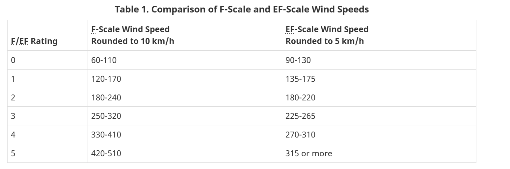
In 2007, Meteorology was a bit different in canada, compared to the US at the time. For starters, we were still using the older Fujita scale, and didnt implement our own version of the Enhanced Fujita scale (see image on the left, its our scale in KM/H, and fun fact, our EF-5 threshold is lower than the US! 315 KM/H is just under 197 MP/H), so we were still using the old (and outdated) Fujita scale, which ended up creating some interesting situations. Environment Canada and Climate Change (shortened to ECCC, which i'll be refering it as) was also underfunded (and still is today), and it shows alot when trying to find archived radar data.
Speaking of the Canadian Radar Network! It was still sort of in its infancy. In the mid 1980's, we aquired WSR-88d's for parts of our network, most notable including the King City site, which viewed the 1985 Barrie F4. In the late 90's, we eventually upgraded to Dual-Polarized doppler radars, which were c-band radars, called wsr-98a's. This is the kind or radar that was used between the 90's and until 2017/2018, when we begain to upgrade to our new s-band radars. Our c-band radars had its limitations, but thankfully, the outbreak was covered by the CXWL Woodlands radar site, which was only a short distance away from Elie, and Oakville. Sadly, this information is not free and open to the public, and the last time I checked, you have to pay to get this radar data. Some people do have some radar loops and images posted on their socials.
The Environment
This section was done by Echo, special thanks to him.
On June 22nd, sufficient moisture was in place across much of Southern Manitoba ahead of a severe weather day. Upper 60 to low 70 degree dew points had advected northward along the advancing warm front. A surface low developed in Saskawatchen and would move east throughout the day of the 22nd. Strong low level shear would overspread southern Manitoba with SRH values in excess of 200-300 m2/s2. However throughout the day, a large limiting factor was a capping inversion. This would prevent storms from firing given minimal forcing. The main development of storms was expected along the cold front. However, two very unique and unexpected features became noticeable as time went on. Gravity waves originating from the Manitoba Escarpment 36 kilometers southwest of Woodlands. Another feature was a lake-breeze boundary originating from Lake Manitoba. The interactions of these two features would create horizontal convective rolls (HCRs) south of Lake Manitoba, which in turn would create the forcing necessary for rapid supercell thunderstorm development. At 6 PM CDT, a RAOB sounding released from Carman MB would reveal an extremely concerning environment. 6000 j/kg of MLCAPE combined with over 300 m2/s2 of 0-3km storm relative helicity with the cap eroded entirely. Any storm that were to pop up would be fully capable of a tornado threat.
The Elie F5
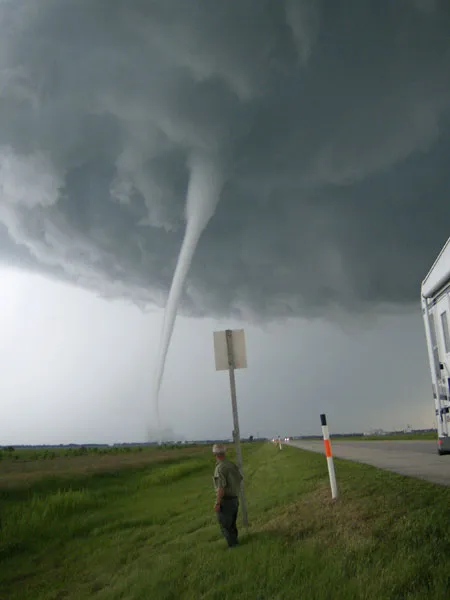
The Elie MB F5 is Canada's most know tornado, mostly due to it being one of the few F or EF 5's outside of the United States. Besides that, it is also infamous for a handful of reasons. The first reason is that it is one of Canada's strongest tornadoes, and is the highest rated tornado in Canada, aswell as being Canada's only F or EF 5. Another reason why its infamous is due to its track, which we will get to later. It was also a highly photogenic tornado, well it was an understatement to call it photogenic.The Legacy
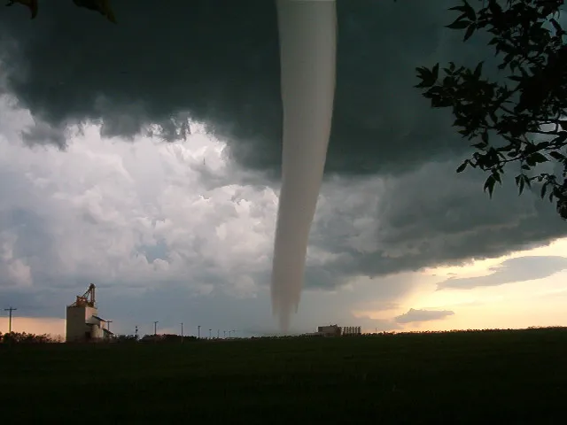
The Elie F5 had left certainly a unique legacy after it lifted. Throughout its 35 minute lifespan, it was insanely photogenic, Killed and injured exactly 0 people, lofted an entire house in one piece, and became Canada's one and only F5. Another reason why so many people find this tornado is the path, which ill elaborate on.
The path
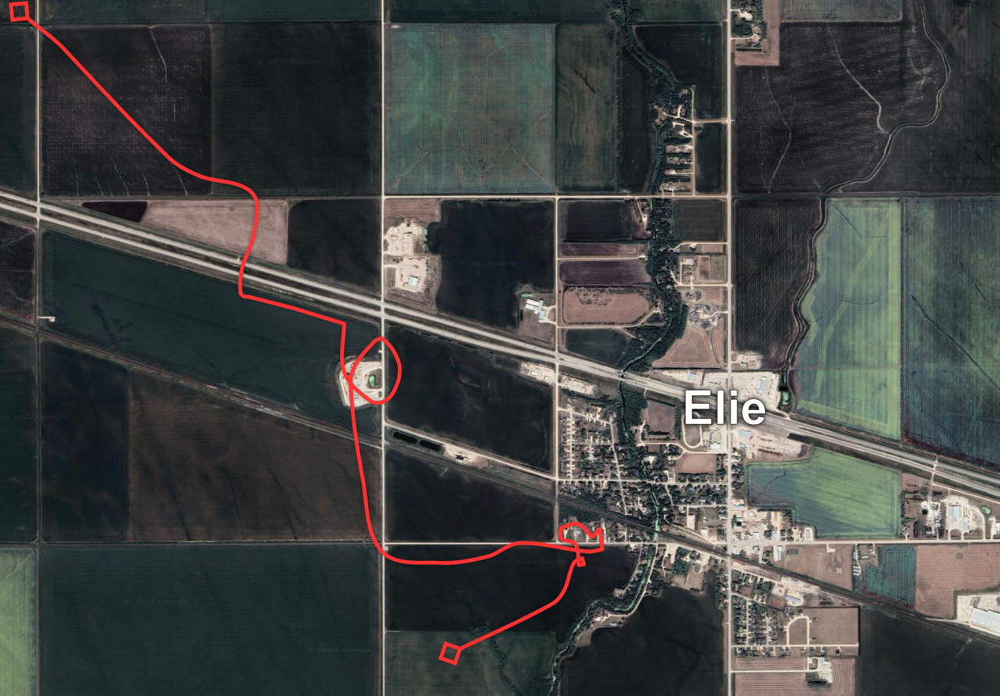
The path of the tornado was truly unique. The tornado looped over itself multiple times, and seemingly randomly wandering randomly at points. If you are curious, this was because of the slow, forward motion of the storm, and the relatively narrow width of the tornado, which was 32m (or 35 yards for the Americans) at its widest point. This narrow, wiggly path was apparently in most, if not all, tornadoes in this outbreak.For most of its life, the Elie F5 was a weak tornado, doing F2 damage to a mill just west of the town, or doing weak tree damage. But as it made its way towards the south part of town, it begain to shrink rapidly, and due to the conservation of angular momentum, the windspeeds begain to increase dramatically as the width shrank. It was doing this right as it started to impact the first house, and then continued to go down the street, weakening the furter it went down. Eventually it turned to the south and begain to lift, but not before doing more loops and twists.
The Rating
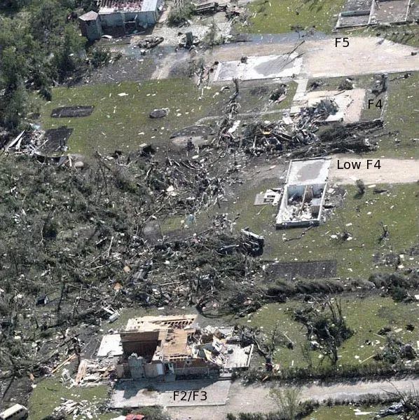
The Official rating (as of Febuary 2026) is still an F5. But when it was first being surveyed, the surveyors innitially agreed that the damage should be downgraded to an F4, based on the slow motion of the tornado. Essentially, they believed that the tornado stalled over the few rows of houses, and that was the reason for the heavy damage, and would then get an F4 rating.So how did it get the F5 rating then you might ask. In a short answer, a youtube video. To be clear, it was this youtube video. It clearly showed an entire house being lifted in once piece and thrown. This single video is what upgraded the rating, which is almost unheard of. Also as a side note, this video is very good footage of the wind interactions that happen at the surface during a tornado, and just the insane upward motions in a skinny, violent tornado. In a conference in 2008, a few scientist submitted a paper on the Elie F5, where they mentioned that the Elie tornado would recieve an EF5 rating on the Enhanced Fujita scale, which was newly implemented and started use earlier that year in the United States, as mentioned earlier. Overall, this rating is a rather unique case, where video after the event was the reason why a tornado got upgraded, not the usualy case on either studies coming out after the tornado happened/right around the tornado (looking at you, Enderlin EF5), or based on more in depth surveying. It's quite the unique example.
Overall, this F5 is one of the most unique out there, and is one of the coolest cases out there. It is also one that I constantly look back to and try to find new information on.
The Pipestone F3
The Oakville F3
During the later half of the Elie F5's live, the Oakville F3 touched down. In some video's and photos, you can actually see the two tornadoes on the ground at the same time. In Justin Hobson's famous video, you can actually see the tornado. On the topic of photos and videos, this tornado was also well documented, with many people taking photos and videos of it. This tornado looked nearly identical to Elie throughout its life. I have often seen many people mistake photos of Oakville for Elie.While many photo's of this beautiful Stovepipe exists, barely anything related to damage exists. Even satellite data barely has the damage available (more on this later). From what we have tried to find, only ~7 photos of damage from this tornado actually exists.
The Rating
The official Rating from Environment Canada (and in the NTP records) is an F3 on the fujita scale. The report thats given is quite lack-luster, containing a small and brief description of damage to justify the rating. The following is whats available (special thanks to Jack Hamilton with the CSSL, who reached out to me after I made a twitter post)
- Event Location: Oakville, MB
- Year: 2007 Month:6 Day:22
- Time of Day (24 hr local): 1855
- F/EF Rating: 3
- Max Windspeed (km/h): -999
- Path Length (m): -999
- Max Path Width (m): 200
- Motion From (degrees): -999
- Rating Basis: AH; old farmhouse destroyed
- Fatalities: 0
- Injuries: 0
- losses($K): -999
- Data Sources: NTP30yr; ECCC_30yr
- Comments: EC-Research - Destroyed several outbuildings including a Quonset, damaged a house and grain storage bins, and destroyed machinery at a farmstead, many trees were down. NTP (2024) - EC-PNR records indicate an old farm house was obliterated to foundation, trees were sheared off with debarking apparent. No apparent track in historical Landsat imagery. Elie F5 tornado was causing damage at same time (photos of both in same frame). Review of historical satellite imagery shows no evidence of the tornado.
I do know that depending on where you get the data from, sometimes the single point is also in there as a start long/lat, but no end point. Not to mention the lack of some values makes it seem that Environment Canada just surveyed one or two homes. In 2024, it looks like the NTP revisited this tornado, but apparently they could find anything on LANDSAT, which I will get onto later.
Historical Data
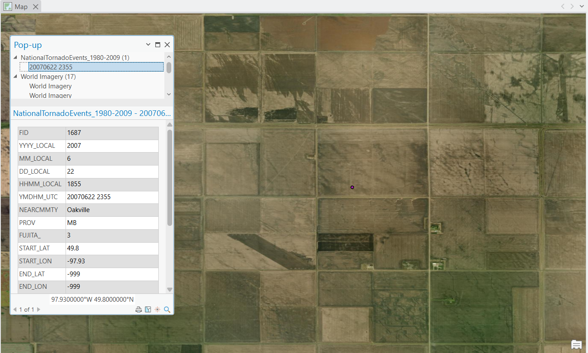
As I was learning about this tornado, I was wondering if I could find any Hi-res satellite data of this tornado on google earth, which unfortunately doesnt exist to my knowledge. I then wondered about the path of the tornado, mostly since Elie's path is so unique (and twisty), so I wondered if it was something similiar to Elie. However, looking on any database out there, This tornado either straight up didnt exist, or (as pictured to the left) is a single point located in a farmers field. Uniquely though, Highway's and Hailstones does have a path (I would later find out to be incorrect), which just appears to be two points, a start and end, with a line connecting the two. naturally, I got curious and decided to see if I can find anything to even suggest if there was a tornado that had happened.
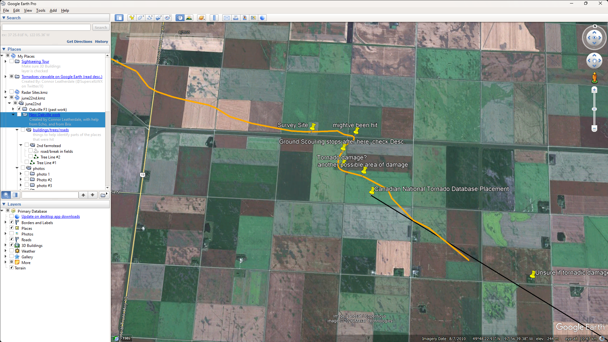
So about Two years ago (~2024), I started a new KMZ file in Google Earth, and set the satellite data to 2010. After a few hours I had found a few places that looked like old tornado damage, and basically just tried connecting the dots with them. The photo on the left is pretty much all the old work I did, with the orange line representing my new path, along with the highways and hailstones path in black. I would later come to find out that the majority of this path is just straight up wrong, and like half of the places I thought had been hit.The Correct Path
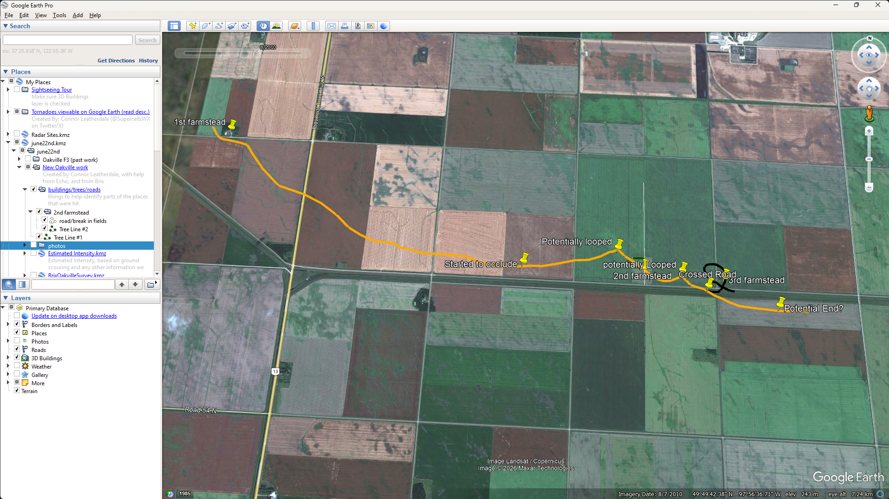
So towards the end of 2025, I started work on a new path, with the help of some friends too. This time I started to look into other ways of getting satellite data. And we also looked towards confirming damage photos aswell. We also used some radar data to help us out. Circling back to the Satellite data, one of the only satellites that we could get for this area during this specific time was LANDSAT, which you probably know from the 1985 period of satellite data on google earth, and for being in a low-resolution, not the Hi-Res stuff we wanted (which to my knowledge doesnt exist). Luckily, We were able to see different bands (some satellites let you view in different bands of light, like IR, or visible spectrums for example, and they also have specific filters/bands for stuff like agriculture, and water and whatnot, which was also of use).
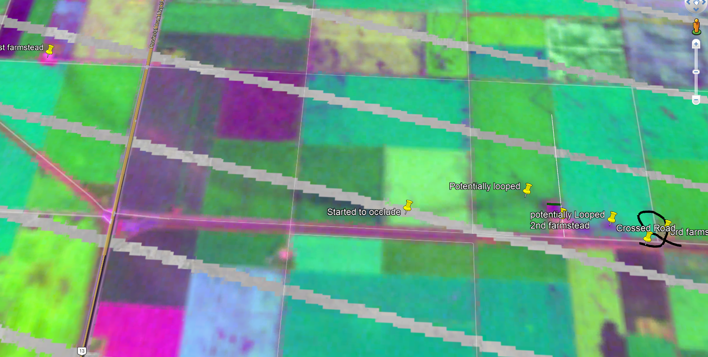
To the right is a pass from LANDSAT from July 18th, 2007 in the AG (agriculture) band. Sadly, this spot was on the edge of a pass, so we get this weird artifacting/ lines, but we're still able to see what we want. Nearly a month after, the scar/ground scouring is still highly visible, which is insane. We can also see the obliterated farmstead too, along with what appears to be several failed occlusions.what confused me the most is why the NTP never found this? I found this, for free, on the ESRI website, which has a LANDSAT viewer. Not to mention I could clearly make out a path of atleast the most intense parts of the track. From what I can imagine, there is some sort of legal issue with using this data, or this data recently came out/ its just really annoying to find. Or they wanted higher quality data (which as i said earlier, doesn't really exist)
Anyways, I used about 3-4 more scans, none were really available from right after the event due to cloud coverage, or the data being so noisy I couldnt make out anything usefull. Other than satellite data, we actually used some radar data aswell, as there is data from the CXWL (now CASWL) during the event. One of my friends tracked the position of the couplet every scan, and at different tilts and put them in a KMZ file to be used as a reference. I used this as a reference to the path, to help figure out the "error" margin between the ground and what the radar was seeing.
To elaborate further (to the uninnitiated)
In a supercell, the updraft is slanted slightly, due to winds at different levels moving at different speeds, with the top being pushed harder. Typically, the difference between the force at the top and the bottom/mid-section of the storm doesnt differ by much, since strong upper level winds can literally tear storms apart.
Anyways, why is this important?
Radar's scan at certain elevations, where as a tornado only interacts with the ground in one spot, the lowest part of the entire storm. Sometimes youre really lucky and the radar is scanning only a few thousand feet above the ground, where the different/"error" is just a few yards. Yet if the radar is scanning higher up, or if the updraft is really slanted, you can have a difference from 0.25-0.5 miles in some rare cases. This is especially important in our case, which i will explain later.
Below is an example of a slanted updraft from July 2026, using 3d scans from a WSR-88d in the States
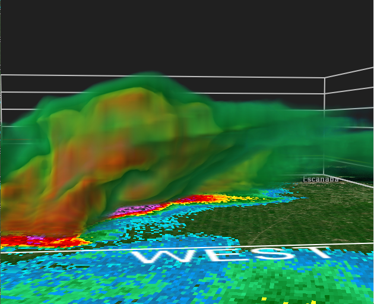
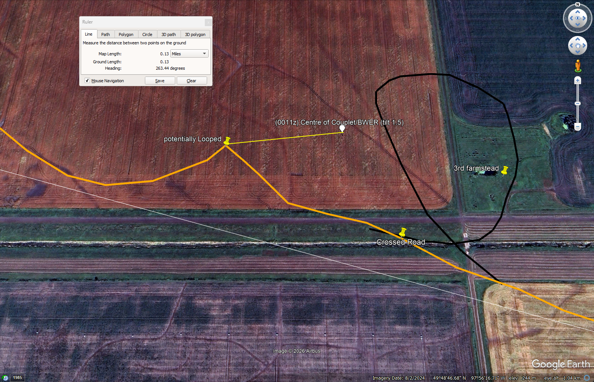
The difference between the radar and the ground varies along the path. In the beginning, the tornado is planted, and is connected with the updraft, and it appears the tornado, and the storm, are riding some sort of boundary (I believe a lake front). During this part, the difference between the two are minimal.It is only after it impacts the second farmstead, where it looks like the tornado actually became detatched from the main updraft and tried to occlude, which causes the path to become really eradic. Not as much as elie's, mostly since Oakville was still being influenced by the boundary, but as soon as it became detatched, it tried to occlude several times, atleast 2-3 times before finally roping out. During this final phase of its life, the tornado became heavily skewed, and theres plenty of photos showing this off. The photo on the right shows the difference of ~0.15 miles during the final minutes of this tornadoes life.
Pretty much anything after this point is uncertainty, although I believe what happened was one of two possibilities...
- The tornado kept moving along gradually weakening until it lifts
- the tornado goes through another occlusion phase, ultimately lifting
In the first case, it could be what had happened. On some of the satellite imagery, both myself and a few other people kept thinking we saw a contunied path just to the south of the road until it finally ended, although it was REALLY difficult to tell, and uncertain if this was just a ditch, instead of a tornado.
In the 2nd case, its also likely, it could've did something very similiar to the end of the Greensburg EF5, or the more recent Enderlin EF5, where it had an occlusion phase, where the tornado existed, up until it crossed its previous steps, where it then withered away.